리눅스마스터-2급 (2012-03-13 기출문제)
1과목: 리눅스 운영 및 관리
1. 리눅스 시스템에서 일반적으로 메일, 로그관련 데이터가 저장되는 디렉토리로 알맞은 것은?
- /etc
- /usr
- /var
- /lib
(정답률: 70%)

2. 현재 IHD라는 파일의 속성이 다음과 같은 상태이다. 소유자에게는 읽기/쓰기/실행 권한을 부여 하고, 그룹과 다른 사용자에게는 읽기 및 실행 권한만 부여할 때 ( 괄호 )안에 들어갈 내용으로 알맞은 것은?
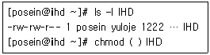
- u+x,go+x
- 655
- u+rwx,go+rx
- 755
(정답률: 79%)
3. 다음의 명령어를 수행하면 사용가능한 쉘의 목록이 출력된다. 어떤 파일의 내용이 출력되는 것인가?
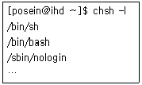
- /etc/sh
- /etc/shell
- /etc/shells
- /etc/shadow
(정답률: 74%)
4. 다음과 같이 사용중인 Serial-ATA 하드 디스크 장치 파일에 아래의 명령을 실행했을 경우, ( 괄호 )안에 들어갈 내용으로 알맞은 것은?
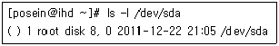
- drw-rw----
- lrw-rw----
- brw-rw----
- crw--w----
(정답률: 45%)
5. umask 설정값과 관련된 설명으로 틀린 것은?
- umask는 새로이 만들어지는 파일에 대한 파일 권한을 제한하는 기능을 하는 명령어이다.
- umask 0으로 설정하면 파일 생성시에는 777(rwxrwxrwx), 디렉토리는 666(rw-rw-rw-)이 된다.
- umask 값이 0002인 경우 “umask –BS” 명령을 실행하면 u=rwx,g=rwx,o=rx로 표시된다.
- umask 값 설정은 root뿐만 아니라 일반 사용자들도 가능하다.
(정답률: 57%)
6. 다음 중 리눅스 파일시스템에 관한 설명으로 틀린 것은?
- iso9660은 표준 CD-ROM 파일시스템이다.
- nfs는 네트워크상의 컴퓨터들이 상호간의 파일 공유를 위한 파일시스템이다.
- 저널링 파일시스템은 ext2부터 적용되었다.
- vfat는 윈도우의 FAT32를 뜻하는 파일 시스템 명칭이다.
(정답률: 79%)
7. 다음 중 분할된 파티션의 사용량을 가장 손쉽게 확인할 수 있는 명령어는?
- du
- df
- fdisk
- parted
(정답률: 62%)
8. 다음과 같이 root 사용자가 손쉽게 /home 디렉토리에 있는 계정들의 총 사용량을 확인하였다. ( 괄호 )안에 들어갈 내용으로 알맞은 것은?
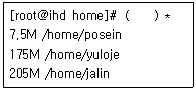
- du – Bsh
- ls - lS
- df – Bh
- resize2fs
(정답률: 71%)
9. 리눅스 커널 2.4 버전에서는 Quota관련 설정파일이 32bit 체제로 변환되었다. quotacheck를 하기 전에 생성해야 되는 파일로 알맞은 것은?
- quota.user
- aquota.user
- user.quota
- user.aquota
(정답률: 49%)
10. 다음 중 시스템 부팅시 파일시스템 점검과 관련하여 fsck 명령에 의해 참조되는 필드의 영역으로 알맞은 것은?
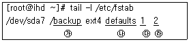
- ㉮
- ㉯
- ㉰
- ㉱
(정답률: 68%)
11. 다음 ( 괄호 )안에 들어갈 내용으로 알맞은 것은?
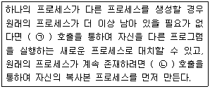
- (ㄱ) fork, (ㄴ) exec
- (ㄱ) exec, (ㄴ) fork
- (ㄱ) kernel, (ㄴ) init
- (ㄱ) init, (ㄴ) kernel
(정답률: 68%)
12. ps 명령 실행 결과로 보여주는 필드명 중 가상 메모리 사용량은 무엇인가?
- VSZ
- RSS
- STAT
- TTY
(정답률: 60%)
13. 다음 중 시그널 번호와 이름이 알맞은 것은?
- 2 - HUP
- 3 - INT
- 9 - QUIT
- 15 - TERM
(정답률: 66%)
14. foreground로 실행되는 프로그램을 background로 전환하기 위해 suspend상태로 변환 할 때 [CTRL]과 함께 눌러야할 키로 알맞은 것은?
- c
- d
- x
- z
(정답률: 75%)
15. 다음 ( 괄호 )안에 들어갈 내용으로 가장 알맞은 것은?
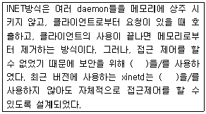
- Firewall
- tcp_wrapper
- ipchains
- iptables
(정답률: 46%)
16. 다음 명령어 중 부모프로세스와 자식프로세스의 연결구조 형식으로 출력해주는 명령어는?
- kill
- pstree
- top
- nice
(정답률: 88%)
17. 다음 중 top 명령어 실행으로 확인할 수 있는 항목으로 틀린 것은?
- 동작중인 전체 프로세스의 수
- Swap 사용량
- 디스크 사용량
- CPU 사용량
(정답률: 64%)
18. 다음 중 httpd 이름으로 실행중인 프로세스들을 종료시키고자 할 경우 ( 괄호 )안에 들어갈 내용 으로 알맞은 것은?
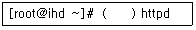
- kill -1
- kill -9
- kill –B15
- killall
(정답률: 55%)
19. 다음 명령의 결과에 대한 설명으로 틀린 것은?
- NI값이 10 증가된다.
- vi는 기존보다 높은 우선순위를 갖게 된다.
- nice로 할당할 수 있는 값의 범위는 -20 ~ 19까지이다.
- nice -10 vi 와 같다.
(정답률: 57%)
20. 다음 중 /etc/backup.sh라는 파일을 매주 월요일, 수요일, 금요일 오전 4시 10분에 실행하기 위하여 crontab에 등록할 경우 알맞은 것은?
- 1,3,5 10 4 * * /etc/backup.sh
- * * 1,3,5 10 4 /etc/backup.sh
- 10 4 * * 1,3,5 /etc/backup.sh
- 1,3,5 * * 10 4 /etc/backup.sh
(정답률: 83%)
21. 다음 중 사용할 수 있는 login 쉘들의 경로가 설정되어 있는 파일은?
- /etc/shells
- /etc/passwd
- /etc/login.defs
- /etc/shadow
(정답률: 53%)
22. Bourne 쉘 환경변수인 PATH 에 대한 설명으로 알맞은 것은?
- 프롬프트 설정값이다.
- 명령어 검색 경로이다.
- 터미널 종류이다.
- 맨(man)페이지 경로이다.
(정답률: 64%)
23. 다음 중 확장 C쉘로 명령행 편집기능을 제공하는 쉘로 알맞은 것은?
- bash
- csh
- Tcsh
- sh
(정답률: 63%)
24. 다음 chsh 명령어로 csh 쉘로 변경할 때 ( 괄호 )안에 들어갈 설정으로 알맞은 것은?
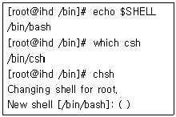
- /bin/csh
- csh
- /bin/bash
- bash
(정답률: 65%)
25. bash 쉘에서 사용되는 특수문자 중 이전의 명령이 성공하면 실행하는 AND 연산의 조건부 실행 기호는?
- ;
- ||
- &&
- &
(정답률: 63%)
26. 다음 중 사용자의 홈 디렉토리를 확인할 수 없는 것은?
- echo $HOME
- cat /etc/passwd
- cd ~ ; pwd
- echo $home
(정답률: 52%)
27. 다음 중 쉘 프로그램 변수 선언 규칙으로 틀린 것은?
- A-Z
- 0-9
- a-z
- !,@,#,$
(정답률: 71%)
28. bash쉘에서 이전에 사용했던 history 명령을 찾는 단축키로 알맞은 것은?
- <Ctrl + r>
- <Ctrl + e>
- <Ctrl +A >
- <Ctrl + l>
(정답률: 52%)
29. emacs 에디터의 도움말 명령으로 알맞는 것은?
- <Ctrl + h>
- <Alt + h>
- <Ctrl + v>
- <Ctrl + Alt + h>
(정답률: 62%)
30. vi -R ihd.txt로 읽기 전용 모드로 편집 중 이다. 이 파일을 강제로 저장하고 종료하는 명령으로 알맞은 것은?
- w!
- w
- wq!
- q
(정답률: 89%)
31. Emacs편집기 삭제 명령 중 틀린 것은?
- <DEL> : 커서 앞 글자 삭제
- <Ctrl + d> : 커서 위치의 글자 삭제
- <Alt + Del> : 이전 단어 삭제
- <Alt + k> : 현재 라인 커서 뒤부터 모두 삭제
(정답률: 44%)
32. vi 편집기에 대한 설명으로 틀린 것은?
- 명령모드와 입력모드 두 가지 방식이 있다.
- 문자를 입력할 때는 입력모드로 해야 한다.
- 입력모드에서 명령모드로 전환 시는 ESC키를 누른다.
- 명령모드에서 세미콜론()을 입력하면 ex모드가 된다.
(정답률: 66%)
33. vi 편집기에서 편집한 파일을 다른 이름(ihd.txt)으로 저장 하는 명령어는?
- :q! ihd.txt
- :w ihd.txt
- :ab
- :set nu
(정답률: 83%)
34. vi 편집기 사용 시 기존에 사용 중인 ihd.txt 파일을 열면 해당 디렉토리에 추가로 파일이 생성 된다. 생성되는 파일명으로 알맞은 것은?
- .ihd.txt.swp
- ihd.txt.swp
- ihd.txt.org
- .ihd.txt.org
(정답률: 58%)
35. 다음 중 RPM 패키지 구조를 바르게 나열한 것은?
- 패키지이름-버전-릴리즈–B아키텍처.rpm
- 패키지이름-릴리즈-버전-아키텍처.rpm
- 패키지이름-아키텍처-버전–B릴리즈.rpm
- 아키텍처-버전-릴리즈-패키지이름.rpm
(정답률: 66%)
36. RPM에 기본적인 동작 모드로 틀린 것은?
- 설치모드 : rpm –Bi 패키지명
- 질문모드 : rpm -q 패키지목록
- 제거모드 : rpm –Be 패키지명
- 업그레이드 방법 : rpm --force 패키지명
(정답률: 69%)
37. RPM 패키지 구조 중에서 64bit CPU 아키텍처로 알맞은 것은?
- i386
- i686
- x86_64
- sparc
(정답률: 71%)
38. RPM 설치 시 연속적인 해시(#)마크를 표시하는 옵션은?
- -h
- -i
- -U
- -v
(정답률: 73%)
39. RPM 설치시 강제적으로 설치하는 --force 옵션에 포함되는 옵션들은?
- replacepkgs, replacefiles, oldpackage
- replacepkgs, replacefiles, repackage
- nodeps, replacefiles, oldpackage
- replacepkgs, replacefiles, relocate
(정답률: 52%)
40. 데비안(Debian)리눅스에서 64bit 라이브러리들이 있는 디렉토리는?
- /lib64/, /usr/lib64/
- /lib32/, /usr/lib32/
- /lib/, /usr/lib/
- /lib/, /lib32/
(정답률: 46%)
41. 다음 중 상용 유닉스 배포판에서 사용되고 특허가 있는 compress를 대신하는 확장자가 gz인 GNU/UNIX 압축 유틸리티로 알맞은 것은?
- gzip
- gunzip
- zip
- zcat
(정답률: 74%)
42. 다음 명령과 동일한 명령어는?
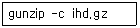
- zcat ihd.gz
- zmore ihd.gz
- zless ihd.gz
- gzip ihd.gz
(정답률: 47%)
43. 다음 중 LPRng 프린팅 시스템을 이용하는 경우 환경 설정 파일은 무엇인가?
- /etc/printcap
- /etc/lprng
- /etc/print.conf
- /etc/cups/cups.conf
(정답률: 58%)
44. ihd.txt라는 파일의 내용을 설정된 프린터로 출력 하고자 한다. 다음의 ( 괄호 )안에 알맞은 것은?
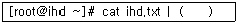
- lpc
- lpq
- lprm
- lpr
(정답률: 61%)
45. 다음 중 프린터 큐의 상태를 출력하는 명령어는?
- lpc
- lpq
- lprm
- lpr
(정답률: 83%)
46. 다음에서 설명하는 프로그램으로 알맞은 것은?
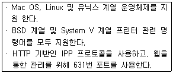
- LPRng
- cups
- samba
- ALSA
(정답률: 40%)
47. 다음 중 리눅스 커널 2.6.x 버전의 표준인 사운드 드라이버는?
- OSS/Free
- OSS
- OSS/Lite
- ALSA
(정답률: 64%)
48. 다음 중 리눅스에서 스캐너를 사용하기 위해 설치해야할 프로그램으로 알맞은 것은?
- xmms
- gimp
- sane
- ghostscript
(정답률: 71%)
2과목: 리눅스 활용
49. 다음 중 X 윈도우를 실행시키는 명령은?
- startx
- xstart
- runx
- xrun
(정답률: 66%)
50. 다음 중 X 윈도우의 특징이 아닌 것은?
- 네트워크 기반의 그래픽 환경이다.
- 스크롤바, 아이콘, 색상 등의 그래픽 환경에 필요한 자원들이 특정한 형태로 정의되어 있다.
- 사용자가 원하는 모양의 인터페이스를 만들수 있다.
- 서로 다른 이 기종을 함께 사용할 수 있고, 디스플레이 장치에 의존적이지 않다.
(정답률: 46%)
51. X 윈도우에 필요한 도움말이 저장되어 있는 디렉터리로 알맞은 것은?
- /etc/X11/xinit/Xclients
- /etc/sysconfig/desktop
- /usr/X11R6/man
- /usr/X11R6/lib/xinit/.xinitrc
(정답률: 55%)
52. 다음 ( 괄호 ) 안에 들어갈 용어의 순서가 알맞게 나열될 것은?
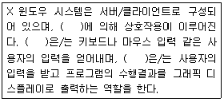
- X 서버 - X 프로토콜 - X lib
- X 클라이언트 - X 서버 - X 프로토콜
- X lib - X 프로토콜 - X 클라이언트
- X 프로토콜 - X 클라이언트 - X 서버
(정답률: 56%)
53. RedHat 패키지 관리(RPM)를 사용하는 운영체제가 탑재된 워크스테이션 네트워크를 위한 패키지 관리 자동화 도구는?
- yum
- cron
- rpm
- install
(정답률: 60%)
54. 다음 중 X 윈도우 데스크톱 환경에 대한 설명으로 틀린 것은?
- GNOME과 KDE는 윈도우 매니저이다.
- 윈도우 매니저, 파일매니저, 도움말 시스템, 제어판, 바탕화면 등 다양한 도구를 제공한다.
- 다른 윈도우와 차별화된 고유한 특징과 GUI로 구성되어 있다.
- 통일된 디자인을 가진 애플리케이션과 아이콘, 오피스 슈트, 네트워크 관리 도구 등을 제공 한다.
(정답률: 44%)
55. KDE 데스크톱 환경에서 다른 가상 데스크톱으로 전환하기 위한 명령어는?
- Alt-Tab
- Shift-Tab
- Ctrl-Tab
- Win-Tab
(정답률: 36%)
56. KDE의 구성요소가 아닌 것은?
- 패널
- 테스크바
- 데스크톱
- 바탕화면
(정답률: 52%)
57. 다음 중 근거리 통신망(LAN)에 대한 설명으로 틀린 것은?
- 건물, 공장, 학교 등 제한된 일정 지역 내의 통신에 사용된다.
- 고속 데이터 전송이 가능하다.
- 공중교환전화망을 사용하기도 한다.
- 10Mbps~155Mbps의 전송속도로 데이터를 송수신할 수 있다.
(정답률: 66%)
58. 다음 중 버스형 토폴로지 LAN에 대한 설명으로 틀린 것은?
- 신호 반사에 의한 상호 간섭을 막기 위해 종단기(Terminator)가 존재한다.
- CSMA/CD 방식이 대표적이며 토큰 패싱(Token Passing) 방식에도 사용된다.
- 한 번에 한 컴퓨터만 전송할 수 있으므로 컴퓨터들의 숫자가 네트워크의 성능을 좌우한다.
- 중앙의 제어기를 중심으로 모든 기기가 포인트 투 포인트 방식으로 연결된다.
(정답률: 61%)
59. 다음 LAN 토폴로지 중 고속의 네트워크가 필요하면서 네트워크 환경을 자주 바꾸지 않을 경우 구성하면 좋은 토폴로지로 알맞은 것은?
- 스타 토폴로지
- 버스형 토폴로지
- 링 토폴로지
- 망 토폴로지
(정답률: 45%)
60. 다음 중 LAN의 각 클라이언트가 동시에 통신회선을 사용할 때 발생할 수 있는 충돌을 막아주는 프로토콜로 알맞은 것은?
- Ethernet
- CSMA
- 10BASE-T
- FDDI
(정답률: 63%)
61. 다음 전용회선과 교환회선 방식에 대한 설명으로 알맞은 것은?
- 전용회선은 송수신 데이터 전송이 아주 빈번할 경우 사용하고, 교환회선은 여러 사람들이 공통적으로 사용할 경우 사용한다.
- 전용회선은 다소 저렴한 비용에 상대적으로 데이터의 전송속도가 느리고, 교환회선은 비용이 크지만 데이터 전송속도가 빠르다.
- 전용회선 방식에서 사용자의 통신장비는 망 내의 교환기와 전용선으로 연결되어 있다.
- 교환회선 방식에서 모든 교환기들이 일대일로 전부 연결되어 있다.
(정답률: 41%)
62. 다음 회선교환방식과 패킷교환방식에 대한 설명으로 틀린 것은?
- 회선 교환 방식은 고정된 대역폭을 사용하여 전송한다.
- 패킷 교환 방식은 호출된 지국에 전달되지 않을 경우 송신자에게 통지된다.
- 회선 교환 방식은 호출 후에는 오버헤드 비트가 없다.
- 패킷 교환 방식은 전자 기계식 교환노드이다.
(정답률: 40%)
63. 다음 중 LAN의 접속규격과 처리에 대한 표준을 정하는 기관으로 알맞은 것은?
- ISO
- ANSI
- EIA
- IEEE
(정답률: 65%)
64. 다음 통신장비에 대한 설명으로 알맞은 것은?(문제오류로 실제 시험장에서는 2, 3번이 정답 처리 되었습니다. 여기서는 2번을 누르시면 정답 처리 됩니다.)
- 라우터 : 아날로그 신호가 디지털 방식의 전송로에서 이동하기 적합하도록 변환하는 장치
- 리피터 : 디지털 신호를 새로이 재생하거나 출력 전압을 높여주는 장치
- 브리지 : 동일한 프로토콜을 이용하는 망을 서로 연결해 주는 장치
- 게이트웨이 : 패킷에 포함된 수신처 주소를 읽고 가장 적절한 통신통로를 이용하여 다른 통신망으로 전송하는 장치
(정답률: 80%)
65. OSI 7 계층 모델에서 인접한 개방형 시스템 사이의 전송단위를 오류없이 전달하여 신뢰성 있는 데이터 전송을 제공하는 계층은?
- 데이터링크 계층
- 네트워크 계층
- 전송계층
- 응용계층
(정답률: 39%)
66. 다음 중 TCP/IP의 특징으로 틀린 것은?
- 개방형 프로토콜의 표준으로, 일관성 있고 널리 사용 가능한 사용자 서비스를 위해서 표준화된 하이레벨의 프로토콜이다.
- 특정 H/W나 OS에 독립적으로 자유롭게 사용 가능한 프로토콜이다.
- 국제표준화협회가 컴퓨터 통신구조의 모델과 향후 개발될 프로토콜의 표준적인 기반을 제공 하기 위해 개발하였다.
- 데이터 교환 과정을 제어함으로써 신뢰성 있는 데이터 교환이 이루어지는 프로토콜이다.
(정답률: 37%)
67. TCP/IP 계층 모델의 응용프로그램 계층에 해당되는 프로토콜에 대한 설명 중 알맞은 것은?
- SMTP : 네트워크를 통한 원격 로그인을 제공 한다.
- FTP : 전자메일을 전달한다.
- HTTP : IP 주소를 네트워크 장치에 할당된 이름과 대응시켜 준다.
- NFS : 네트워크 상의 다양한 호스트들이 파일을 공유할 수 있도록 해준다.
(정답률: 71%)
68. 다음은 무엇에 대한 설명인가?
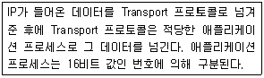
- Socket
- Port Number
- UDP
- Protocol Number
(정답률: 47%)
69. 다음 중 도메인네임에 대한 연결이 틀린 것은?
- ORG : 미국 정부
- MIL : 미국 군사
- COM : 영리 기관
- NET : 네트워크 관리 기관
(정답률: 60%)
70. 리눅스에서 사용되는 브라우저 중 노르웨이에서 개발된 브라우저로 윈도즈, 리눅스 등 다양한 운영체제에서 작동되고 작고 빠르기 때문에 임베디드 시스템에 널리 사용되고 있는 브라우저는?
- 넷스케이프
- 모질라
- 오페라
- 파이어폭스
(정답률: 51%)
71. 다음 중 www 대한 설명으로 틀린 것은?
- world wide web의 약어로 인터넷상에서 멀티미디어와 하이퍼텍스트를 통합한 것이다.
- www 서비스를 위해서는 특정 클라이언트 프로그램인 브라우저가 필요하다.
- 인터넷에 연결된 전 세계 컴퓨터의 모든 문서들을 연결하여 언제 어디서는 정보 검색이 가능하게 해 주는 서비스이다.
- 문자 환경 서비스로서 전문가들이 사용하고, 다양한 컴퓨팅 환경하에서 사용할 수 있다.
(정답률: 67%)
72. 다음 중 GUI 기반의 ftp 클라이언트 프로그램은?
- ncftp
- gFTP
- lftp
- cftp
(정답률: 74%)
73. 다음 중 인터넷상에서 실시간으로 모든 사용자들과 대화를 나눌 수 있는 채팅 서비스는?
- IRC
- USENET
- TELNET
- FTP
(정답률: 68%)
74. 다음 중 네트워크 장치 설정에 대한 설명으로 틀린 것은?
- Netmask Address: TCP/IP에 연결된 컴퓨터의 네트워크 소속을 쉽게 알 수 있는 주소로, 점으로 구분되는 4부분으로 구성되어 있다.
- Gateway Address: TCP/IP에 연결된 컴퓨터에서 어디를 통해서 다른 네트워크를 통할 수 있는지 알려주는 주소로, 점으로 구분되는 4부분으로 구성되어 있다.
- Domain Name: 자신이 속한 도메인 이름이 필요하며, 점으로 구분되는 영어 단어로 표현되어 있다.
- Host Name : 설치하는 컴퓨터의 이름으로 한글/영어 모두 가능하며 네트워크를 사용하지 않을 경우 정할 필요가 없다.
(정답률: 63%)
75. 네트워크상에서 다중 송신자와 다중 수신자 간의 데이터 전송방식을 무엇이라고 하는가?
- Unicast
- Multicast
- Broadcast
- Anycast
(정답률: 67%)
76. 다음에서 설명하는 것으로 알맞은 것은?
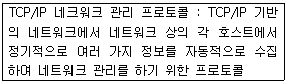
- IMAP
- SNMP
- SCP
- RDP
(정답률: 59%)
77. 다음 중 클라우드컴퓨팅 기술을 통해 IT자원을 사용할 수 있는 클라우드 서비스가 아닌것은?
- 다음클라우드
- N드라이브
- 아이클라우드
- VMware
(정답률: 74%)
78. 다음 중 리눅스 기반 오픈소스 서버 가상화 기술이 아닌 것은?
- KVM
- Xen
- VirtualBox
- JBoss
(정답률: 58%)
79. 다음 중 리눅스 클러스터의 특징으로 틀린 것은?
- open source인 리눅스 운영체제는 사용자가 직접 필요에 맞게 클러스터를 제작할 수 있다.
- 대량 생산되는 PC와 network 장비를 활용하여 저렴한 비용으로 구축이 가능하다.
- 클러스터의 각 운영체제로 리눅스를 사용한다.
- 특정 CPU와 Device 만 지원하기 때문에 하드웨어 호환성이 부족하다.
(정답률: 71%)
80. 다음 설명은 클라우드 컴퓨팅의 어떤 서비스인가?
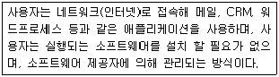
- SaaS(Software as a Service)
- PaaS(Platform as a Service)
- IaaS(Infrastructure as a Service)
- IaaS(Internet as a Service)
(정답률: 55%)
"/var" 디렉토리는 변수(variable)의 약자로, 시스템 운영 중에 변하는 데이터들을 저장하는 디렉토리입니다. 이 디렉토리에는 메일, 로그, 프린터, 임시파일 등 다양한 데이터가 저장됩니다.
"/etc" 디렉토리는 시스템 설정 파일들이 저장되는 디렉토리입니다.
"/usr" 디렉토리는 사용자가 설치한 프로그램들이 저장되는 디렉토리입니다.
"/lib" 디렉토리는 프로그램 실행에 필요한 라이브러리 파일들이 저장되는 디렉토리입니다.